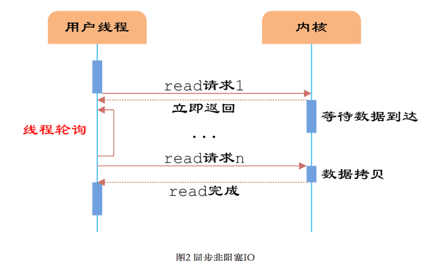

纸上得来终觉浅，绝知此事要躬行。
1. 异步编程
[1] 同步和异步描述的是进程/线程的调用方式
同步和异步
- 同步调用指的是线程发起调用后，一直等待调用返回后才继续执行下一步操作，这并不代表
CPU在这段时间内也会一直等待，操作系统多半会切换到另一个线程上去，等到调用返回后再切换回原来的线程。 - 异步就相反，发起调用后，线程继续向下执行，当调用返回后，通过某种手段来通知调用者。
解释和说明
- 我们需要注意同步和异步过程中的调用返回，指的是内核进程将数据复制到调用进程。上面说的顺序式编程里面，通常调用就是同步的，上一步执行结束之后才会执行下一步。而异步编程中，如果遇到等待的操作，会继续往下执行，直到请求返回结果在进行处理。
- 写一个使用多线程或多进程抓取网站内容的爬虫，但由于网络请求或对方网站等问题，导致某段时间内的请求网站请求很慢。即使设置的超时时间，那么在超时时间到来之前，这些进程或线程都是一个等待的状态，什么也干不了。
- 而异步编程就很适合使用在如上的场景中，它可以通过切换任务的方式尽量减少闲置时间。如遇到等待的请求就先回跳过并执行下一个请求，等执行完成之后再回到这个请求。如果还是没有就绪，就切换到下下一个请求。
[2] 同步和异步编程模型解释及其图示说明
单线程的同步模型
- 在一个时刻，只能有一个任务在执行，并且前一个任务结束后一个任务才能开始。如果任务都能按照事先规定好的顺序执行，最后一个任务的完成意味着所有任务都完成。
多线程/多进程的同步模型
- 每个任务都在单独的线程/进程中完成，且都是由操作系统来管理的。如果在多核
CPU的系统里面，它们可能会相互独立的运行，而在单核中会交替的运行。
异步编程模型
- 这个任务是在单线程的控制下任务交错完成的，相对于多线程或多进程简单很多，没有了内容复制、资源传递的问题。而且，程序的控制权完全在我们手里，而不会被操作系统收回自行处理。
- 在这种异步编程模型，开发者只需要将任务组织成为一个序列，交替的小步完成。每一个异步调用需要足够的小，当然不能耗时太久。
- 可以看到下一图中的这种模型，并没有看到异步编程的太多的优势的，而且线程之间的切换还会带来额外的开销。异步编程，适应于那些任务强制等待或者阻塞的时候，才能发挥其优势所在。
- 那些任务强制等待或者阻塞的原因，大多是因为传输数据或访问外部设备等带来的
I/O操作或网络请求。这里的Waiting就是请求开始到响应之间需要等待的时间，就阻塞了。 - 一个典型的
CPU处理数据的能力是硬盘或网络请求的好几个数量级，因此一个需要大的I/O操作的同步程序，需要花费大量的时间等待I/O操作或网络将数据准备好。这是因为这个原因，同步的程序就叫做阻塞的程序。
[3] 操作系统模型中的进程变化状态
阻塞和非阻塞
- 阻塞与非阻塞的概念是针对
IO状态而言的，关注程序在等待 IO 调用返回这段时间的状态。当线程或进程调用每一个函数的时候，如果需要等待I/O请求等待竞争资源的时候，操作系统就绪将其阻塞起来，避免浪费更多的CPU资源。等待完成之后，将其转换为就绪状态继续运行。 - 阻塞和非阻塞，以及同步和异步，完全是两组概念且之间并没有一个必然的联系。也就是阻塞并不等于同步，非阻塞并不等于异步。
2. IO 编程模型
该编程模型是为了解决 I/O 比较慢而产生的，熟悉和理解该模型有利于我们自己编写异步非阻塞的代码
什么是 IO 模型
- 当
I/O发生的时候就会涉及到对象和步骤的操作，我们这里以网络I/O的read为例。它会涉及到两个系统对象，一个是调用这个I/O操作的进程或线程，另一个就是系统内核。当read操作发生时，第一步会等待数据准备(磁盘到内核内存)，第二步会将数据从内核拷贝到进程中去(内核内存到进程内存)。 - 而在
Python编程中，第一阶段是准备数据阶段，第二阶段是返回计算结果阶段。所以对于下面的模型说明，需要我们自行对照理解。

[1] 阻塞型 I/O 模型
- 在
I/O执行的两个阶段中，应用进程都被阻塞状态，即准备数据阶段和返回计算结果都是处于等待的状态中，消耗CPU性能。
[2] 非阻塞 I/O 模型
- 非阻塞型
I/O中，应用进程需要不断的主动询问第一阶段是否已经完成了。应用进程在第一阶段虽然不用一直阻塞，但是需要不断的主动询问，基本属于忙等状态，所以非阻塞型不一定比阻塞型就好。
[3] 复用 I/O 模型
- 在应用进程和内核中间加一个代理，所有的请求都交给代理去处理，自己只需要等待结果就可以了。这个代理就是我们熟知的
select和poll模型，两者基本没有区别。 - 即使有了代理，依然还是阻塞的，因为有可能会阻塞在代理上，如
select和poll。有了代理最大的好处是，即使阻塞了但代理还可以接受其他用户请求。对性能没有太大的提升，因为还是阻塞的，只是能够处理其他请求而已。
[4] 信号驱动式 IO 模型
- 在第一阶段中，应用进程只需要通知内核加载磁盘内容，加载完成之后，内核会通知已经完成。应用进程还可以响应其他请求，而不怕阻塞在代理上。
- 可以理解为，一个进程可以响应多个请求，这里的性能不一定非常好，因为
I/O的第二阶段还是处于阻塞的状态。
[5] 异步 IO 模型
- 五种
I/O模型里面，除了异步IO模型以外，都是同步的。所以，再次验证了阻塞并不等于同步，非阻塞并不等于异步。 - 异步
I/O模型，应用进程只需要通知内核，内核默默的完成第一和第二阶段，完成之后通知进程已经完成了。真正的实现了不阻塞、不等待的模型。一个进程可以响应多个请求，性能极大地提升。 - 水平触发：完成之后通知应用进程，如果没有收到，会一直发送，直到处理位置，非常消耗资源。
- 边缘触发：完成之后通知应用进程，只通知一次，如果没有处理则存放起来并告诉其位置，比较好的方式。
3. 事件驱动
这些使用场景大多出现在
C/S模型中网络比较繁忙的服务器端
异步模型的使用场景
- 有大量的任务，因此在一个时刻至少有一个任务要运行
- 任务执行大量的
I/O操作，同步模型会让任务阻塞而浪费CPU时间 - 任务之间相互独立，以至于任务内部的交互很少
事件驱动模型就是通过事件来触发对应的操作
事件驱动模型
- 事件驱动模型主要应用在图形用户界面、网络服务和
Web前端上。举个编写图形用户界面程序的例子，要给界面上每一个按钮都添加监听函数，而该函数则只有在相应的按钮被用户点击的事件发生时才会执行，开发者并不需要事先确定事件何时发生，只需要编写事件的响应函数即可。监听函数或者响应函数就是所谓的事件处理器(event handler)，类似的事件还有鼠标移动、按下、松开、双击等等，这就是事件驱动。 - 事件驱动的程序一般都有一个主循环(
main loop)或称事件循环(event loop)，该循环不停地做两件事：事件监测和事件处理。首先要监测是否发生了事件，如果有事件发生则调用相应的事件处理程序，处理完毕再继续监测新事件。事件循环只是在一个进程中运行的单个线程 - 在
Python2标志性的异步框架就是**Tornado(也存在事件循环)、Twisted(基于事件驱动的网络引擎框架)、Gevent(使用的是协程)，它们的共同特点就是异步非阻塞，而在Python3.6标准库中已经自带了asyncio**。
